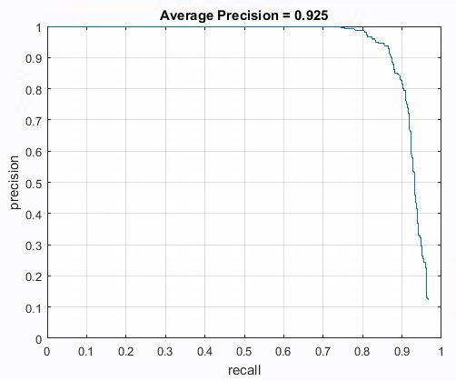

Project 5 / Face Detection with a Sliding Window
HOG image of face detected. (HOG cell Size = 3)
In this project, the Dalal-Triggs Sliding Window Detector for Face Detection was implemented. This consists of the following parts:
Content
Dataset
The dataset used comes from the following sources:- Positive Features: Caltech Web Face Project (6713 36x36 faces)
- Negative Features: Wu et. al. and SUN Scene Database
- Testing Data: CMU+MIT test Set (130 images with 511 faces)
Description and Retrieval of Positive Features
The detection of positive features from the training set of faces was relatively straightforward, since each image was already a pre-cropped 36x36 face. First, the images were read in individually. Each Image was then normalised and its Histogram of Oriented Gradients (HOG) was calculated with each HOG cell size as 6. As all the faces were 36x36 pixels in dimension, it resulted in 6x6 HOG matrix over 31 dimensions. I then converted this 6x6x31 matrix to a string of 1116 features and saved it into a matrix. This was repeated for all images which resulted in a N x 1116 Matrix (feature_pos), where N is the number of images. The result from the first conversion of Argentina.jpg is shown below:Description and Retrieval of Negative Features
For the Negative Features, the dataset used contained images of different sizes and objects. While this complicate things a bit, it was still pretty straightforward. First, with the given number of negative features, an average number of features per images was calculated. I then added addtional features to be obtained per image as some images will not be able to have that many features to be retrieved, especially when I raised the number of negative features to 20,000.
The image was then converted to a HOG image and the same process was then repeated in retrieving the values of each feature and saving them to a matrix. The resultant matrix is a N x 1116 matrix where N is the number of features.
Back to ContentsTraining of Feature using SVM
With both the negative and positive examples ready, I transposed and combined them to a variable called dataset, created a matrix and saved the labels corresponding to each feature to be trained, and with a lambda value of 0.0001, passed the data in to vl_svmtrain to produce the model for future training. The code snippet for this is shown below:
num_positive_examples = size(features_pos,1);
num_negative_examples = size(features_neg,1);
dataset = [features_pos' features_neg'];
labels(1,1:num_positive_examples) = 1;
labels(1,num_positive_examples+1:num_positive_examples+num_negative_examples) = -1;
lambda = 0.0001;
[w b] = vl_svmtrain(dataset,labels,lambda);
Result of Training
With 10,000 negative features, I got a classfier accuracy of: 0.999. However, when the number of negative features was increased to 20,000, the classifier accuracy increased to 1.00 (TP: 0.01, FP: 0, TN: 0.99, FN:0). The results are shown below for a HOG cell size of 6:
And the results below are obtained when trained with a HOG cell size of 3 (also 20,000 negative features).
Detection Algorithm for Test Image
Single-Scale
First, I created a program to detect features for a fixed scale size of 1. For each test image, I converted the image to a HOG image. I then take a segment equal to the template size that was trained in the training phase. Here, I used 36x36 which translates to 6x6 HOG cells. For each of the segment, I saved the values into a 1 x 1116 dimensional matrix similar to the training phase.
I then Calculated the confidence of each of this matrix using the following formula:
tempConf = dot(w,tempFeature') + b;Finally, non-maximal suppression was done to remove detections that are too close together, leaving only the more confident features.
Results for Single-Scale
For the single-scale algorithm, I got quite a decent Average Precision of 0.394. Screenshots of the results can be seen below.
Multi-Scale
I then modified my code to detect faces at multiple scales.
With Each Image that was to be tested, I resized the image to the current scale size starting from a scale of 2. As per above, I got the HOG features for that image at that size and passed a sliding window of the same size as the template through each HOG cell of the HOG image.
The result is tested using the model trained and the confidence is obtained. As with the single scale algorithm, the confidence is checked against a threshold and if its above it, the bounding box is saved. However, there was an adjustment that had to be done here. Since the image was scaled, the bounding box's size had to be scaled back to the original image size. This was done using the following code:
if(tempConf > threshold_confidence)
cur_x_min = ((x-1)*hogCellSize / scale)+1;
cur_y_min = ((y-1)*hogCellSize / scale)+1;
cur_x_max = ((x-1)+noOfHogPerTemplate)*hogCellSize / scale;
cur_y_max = ((y-1)+noOfHogPerTemplate)*hogCellSize / scale;
noOfFeaturesPerImage = noOfFeaturesPerImage+1;
facesPerImage(noOfFeaturesPerImage,:) = tempFeature;
cur_confidences(noOfFeaturesPerImage,1) = tempConf;
% cur_bboxes(noOfFeaturesPerImage,:) = [cur_y_min, cur_x_min, (cur_y_min + templateSize-1), (cur_x_min +templateSize-1)];
cur_bboxes(noOfFeaturesPerImage,:) = [cur_x_min, cur_y_min, cur_x_max, cur_y_max];
end
The result of all the bounding box was then similarly passed through a non-maximal suppression phase. The scale is then changed by a factor (e.g. 0.8) and the process is repeated for different scales of that same image until the image is just above the template size. All images to be tested are then passed through the same steps.
Results
With the following Conditions:
- Threshold: -0.5
- Scale Start: 1
- Scale Step: 0.8 (i.e. scale = 1, 0.8, 0.64, ...)
- Hog Cell Size: 6

Extra Credits
Reducing Hog Cell Size
To test the effects of a reduced Hog cell size, I decrease the HOG cell size to 3 and ran the multi-scale program. The classifier accuracy remained at 1.0 (TP:0.251, FP: 0, TN: 0.748, FN: 0). The HOG and the result of the classifier for this version is shown below:
With such a classifier and Hog Cell Size, the average Precision increased to 0.925. The results obtained from this is shown below:

Hard Negative Mining
In the Paper "Histogram of Oriented Gradients for Human Detection" by Dalal and Triggs, a hard negative mining was done. In this process, once all the positive and negative examples were trained and a model created, the negative examples were passed through the detection algorithm and features that were detected were added to the 'negative pile'. Together with the original positive and negative training examples, the newly detected negative features are then passed through the svm function to create a new, more robust model.
I implemented this via the following code:
[features, bboxes_1, confidences_1, image_ids_1] = run_detector(non_face_scn_path, w, b, feature_params);
num_positive_examples = size(features_pos,1);
features_neg = [features_neg; features];
num_negative_examples = size(features_neg,1);
dataset = [features_pos' features_neg'];
labels(1,1:num_positive_examples) = 1;
labels(1,num_positive_examples+1:num_positive_examples+num_negative_examples) = -1;
lambda = 0.0001;
[w b] = vl_svmtrain(dataset,labels,lambda);
Initially, I used a threshold of -0.7 for both the hard negative mining and testing under the following conditions:
- Hard Mining Threshold: -0.7
- Testing Threshold: -0.7
- Scale Start: 1
- Scale Step: 0.8 (i.e. scale = 1, 0.8, 0.64, ...)
- Hog Cell Size: 6
This resulted in a drop of Average Precision of 0.649. This could be due to a decrease in the number of True Postitives although there was an apparent decrease in False Positives as well. This can be seen from the decrease in Red Boundary Rectangles in the following image:
When the Threshold was increased to -0.5, there was an increase in Average Precision as well (AP = 0.730), however there was an increase in False Positives as well. However, the number of False Positive, especially as seen from the Argentina Picture was still lesser than without Hard Mining.

Theoretically, a more restrictive threshold for Hard Mining should reduce the number of False Positives, but a more restrictive threshold for the testing phase would lead to lesser True Positives as well. To allow for a more optimal condition, I edited my code for run_detector such that the hard mining threshold could be different from the testing threshold.
With the following conditions for the test,
- Hard Mining Threshold: 0
- Testing Threshold: -0.5
- Scale Start: 1
- Scale Step: 0.8 (i.e. scale = 1, 0.8, 0.64, ...)
- Hog Cell Size: 6
We can see an apparent increase in Average Precision when a round of Hard Mining was done although there were more False Positives as well.
Back to ContentsExtra Scenes
These are the results observed using Hard Mining and Multi-scale. I used a Hog Cell Size of 6 with thresholds 0 for the hard mining and -0.5 for the testing, and a multi-scale with a scale starting at 1 and decreasing to 0.9 of the size at every iteration.
We can see that that results are decent with most of the faces detected and not a huge amount of false positives. Even when faces were hidden, whatever clues were provided by the parts of the faces that were shown could be detected as a face in right proportions as well.
Back to Contents